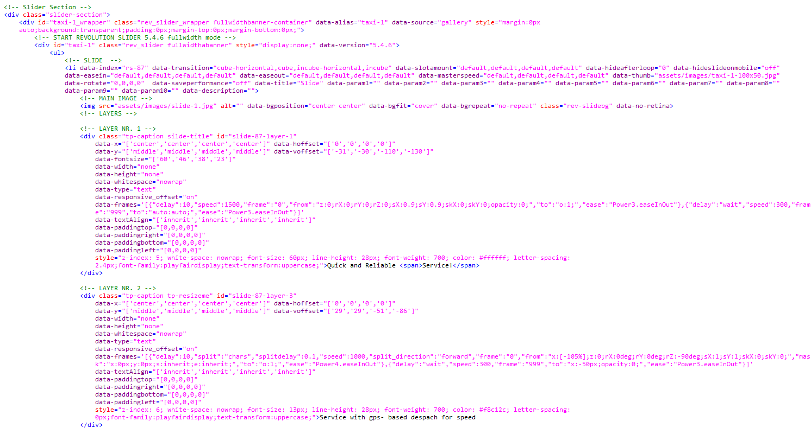
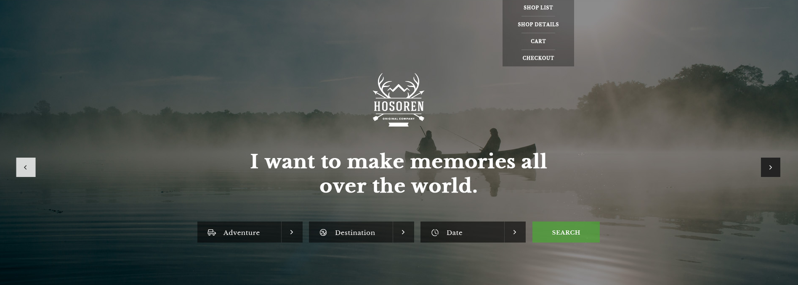
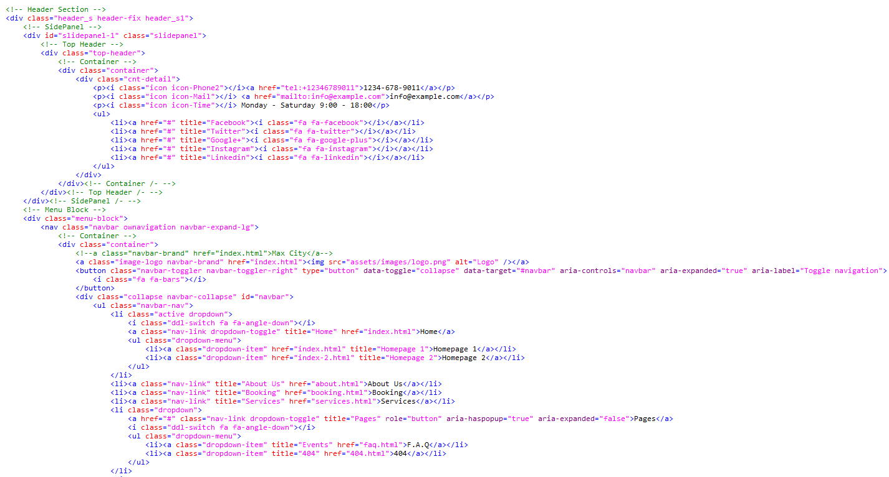
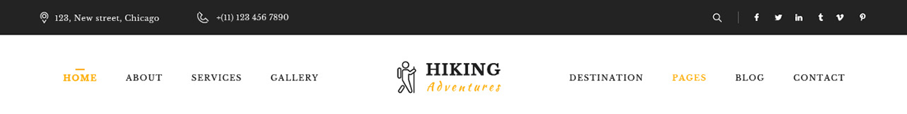

- Hiking HTML5 Template Documentation for version 1.0 by premiumwebs
This program is free software: you can redistribute it and/or modify it under the terms of the GNU General Public License as published by the Free Software Foundation, either version 3 of the License, or (at your option) any later version.
This program is distributed in the hope that it will be useful, but WITHOUT ANY WARRANTY; without even the implied warranty of MERCHANTABILITY or FITNESS FOR A PARTICULAR PURPOSE. See the GNU General Public License for more details.
You should have received a copy of the GNU General Public License along with this program. If not, see http://www.gnu.org/licenses/.
Thank you for purchasing our product! We are very glad that you have decided on our HTML Template.
The Template is very easy to use and we are here to guide and help you, so please read and follow the instructions and if you have further questions write us a email fatonnavdiu@gmail.com. This documentation is more of a reference work if you do not know what to do and need a better understanding on how the template is built write us a email.
Hiking HTML is a Template for all your needs and it has a lot of features, like stiky menu, (wow.js) animations, countdowns and more.
Pages:
A screen of the Home Page:

All the template elements like the Testimonial, event, services, skills etc. are all separated DIV-s that can be used on any page you want.
The template includes javascripts files:
The site is made of many sections like header, slider, testimonials, services and more...
As example we have the slider section, the code below:
And this is how it look live:
And a header section, if you want to change anything here its easy to modify it:
And this is how it look live:
The same thing is with all sections, Services, Our Works, How We Work, Statistics Section etc.. they are all in a section or a div="TYPE-SECTION".
Modify your email here to recive emails from contact form:

This template has been implemented as a responsive layout. The full width of the template is fluid for screen mode, and it still has a boxed version.
The CSS file is located in the css folder. The css file is registered and included in the "head"..."/head".
CSS file is very good structured and arranged so you can search very easy:
/* ## Global ******************************************* */
body {
font-family: 'Roboto', sans-serif;
font-size: 14px;
color: #000000;
overflow-x: hidden;
position: relative;
}
img {
max-width: 100%;
height: auto;
}
a {
outline: 0 !important;
}
h1,h2,h3,h4,h5,h6,p,a,li,span {
word-wrap: break-word;
}
/* ========================================================================== */
/* ========================================================================== */
/* [ + Plugins ] */
/* ========================================================================== */
/* ========================================================================== */
/* ## Site Loader */
.load-position .logo {
margin: 0 auto;
width: 150px;
}
.load-complete .line-scale {
margin: 0 auto;
display: block;
top: 50%;
position: absolute;
left: 0;
right: 0;
text-align: center;
}
.load-complete .line-scale > div {
display: inline-block;
border-color: #ff6101 #ff6101 transparent;
background-color: #ff6101;
}
.load-complete {
position: fixed;
background: #fff;
width: 100%;
height: 100%;
left: 0;
right: 0;
top: 0;
bottom: 0;
z-index: 1031;
}
.load-complete .logo {
color: #4C4C4C;
text-align: center;
display: block;
margin-bottom: 20px;
font-family: 'Roboto', sans-serif;
font-size: 50px;
}
I've used the following images, icons, fonts or other files as listed.
Fonts used:
Third Party:
Note:
Thank you so much for choosing "Hiking HTML" we hope you will enjoy using it!